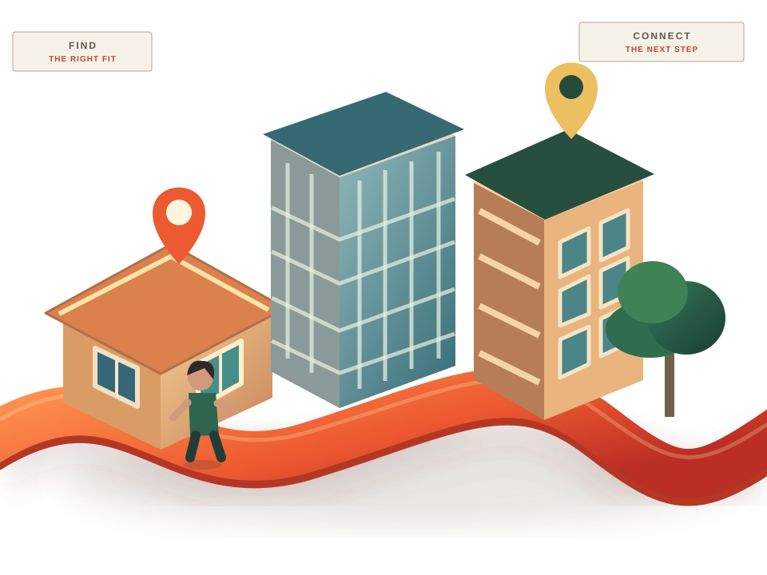

01 / VISIBILITY
Great properties.
Not enough attention.
Customers cannot enquire about an opportunity they never discover or understand.
INDUSTRY 02 / PROPERTY BUSINESSES
Behind every property enquiry is a person making a big decision. Make it easier to get noticed, respond with clarity, and keep the conversation moving.
MARKETING → ENQUIRY → VIEWING → FOLLOW-UP

CONCEPTUAL VISUAL / NOT AN ACTUAL LISTING
01 / THE BUSINESS REALITY
Property businesses balance multiple prospects, listings, appointments and conversations. Small gaps can make the experience frustrating for everyone.
Customers cannot enquire about an opportunity they never discover or understand.
Interest fades when the right person does not receive a timely, relevant response.
Appointments, feedback and decisions need clear ownership, not scattered messages.
02 / FOLLOW THE OPPORTUNITY
Explore how a real estate business can create a more connected experience. These are example workflows, not claims about a specific client.
ATTRACTION / FIRST IMPRESSION
Present the offer clearly and help relevant buyers, tenants or sellers understand the next step.
03 / TAAMERAT360 SOLUTIONS
Our role is business growth, customer communication and operations—not property brokerage, legal advice, valuations or a guarantee of sales.
Bring relevant audiences closer to the right property or business offering.
Explore package ↗Keep enquiries, response times and conversations organised.
Explore package ↗Make appointments, updates and handoffs less fragmented.
Explore package ↗Give teams a clearer picture from enquiry through follow-up.
Explore package ↗04 / PROOF OVER PROMISES
Approved client work, project results and testimonials will be shown here when evidence is provided. Until then, we keep the placeholder visible rather than making unsupported claims.
Explore your own opportunity ↗[Verified business challenge, approach and outcomes]
05 / FIND YOUR STARTING POINT
Use this quick builder to shape a discussion brief. Nothing is submitted or stored automatically.
Answer the three questions, then generate a tailored project brief you can copy.
No information leaves your browser until you choose to copy or share it.
A BETTER PROPERTY BUSINESS JOURNEY
Let's understand your property business challenge and identify a sensible, clearly scoped next step.
Start a conversation